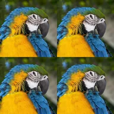

ٹائل

تصویر کو گرڈ میں دہراتا ہے۔
سیٹنگز
| سیٹنگ | قسم | رینج | ڈیفالٹ |
|---|---|---|---|
| اسکیل | نمبر | 0.02 سے 1 تک | 0.5 |
| آفسیٹ | پوائنٹ (X, Y) | -1 سے 2 تک | 0, 0 |
| مرر | آن یا آف | – | آف |

تصویر کو گرڈ میں دہراتا ہے۔
| سیٹنگ | قسم | رینج | ڈیفالٹ |
|---|---|---|---|
| اسکیل | نمبر | 0.02 سے 1 تک | 0.5 |
| آفسیٹ | پوائنٹ (X, Y) | -1 سے 2 تک | 0, 0 |
| مرر | آن یا آف | – | آف |